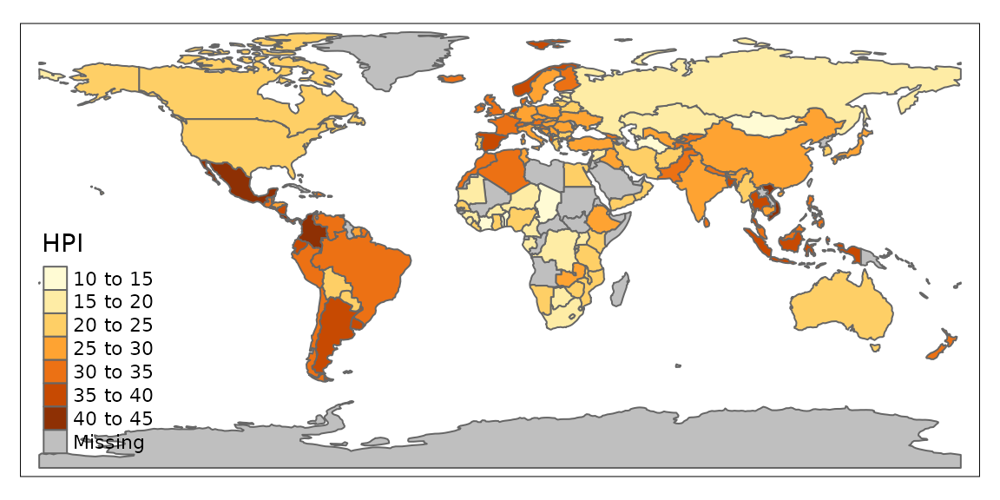
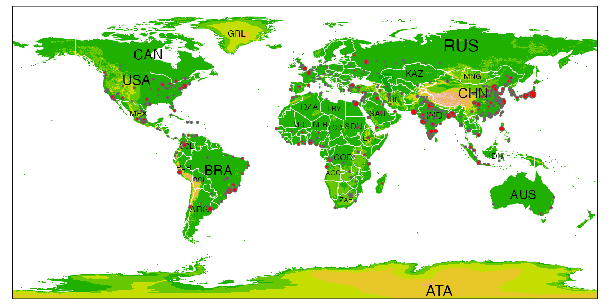
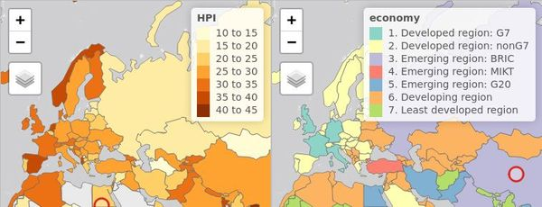
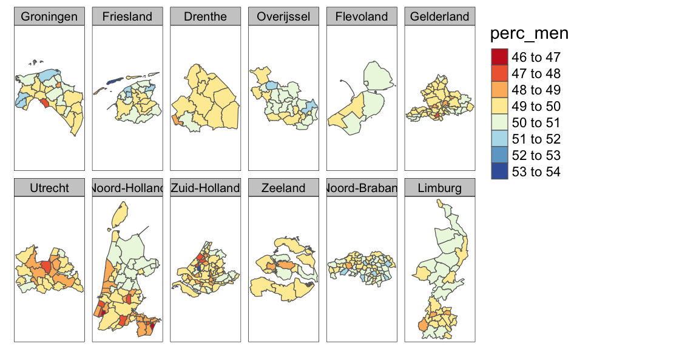
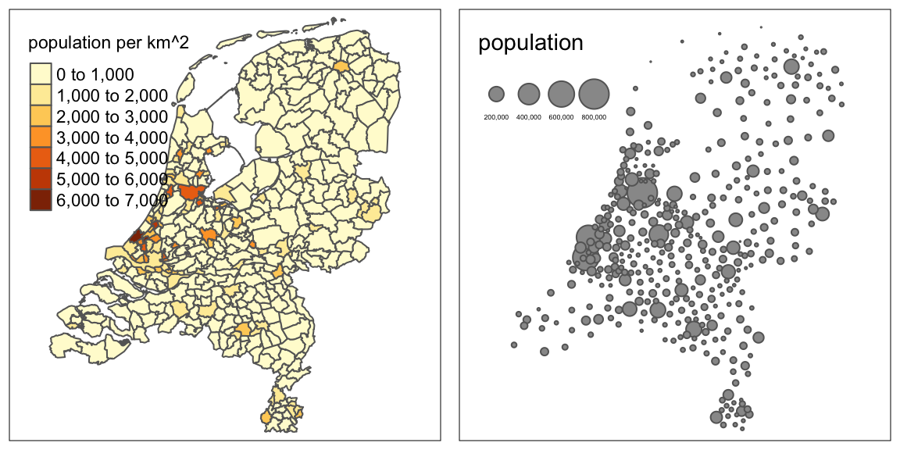
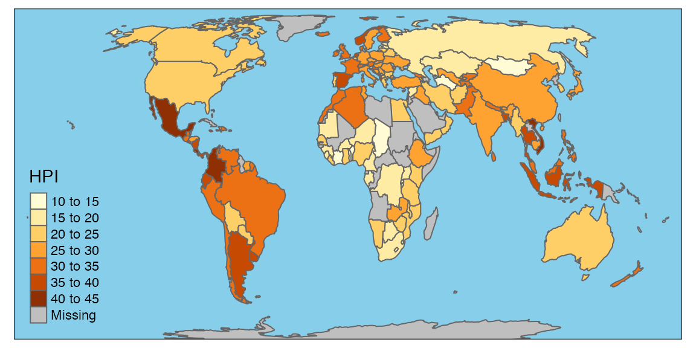
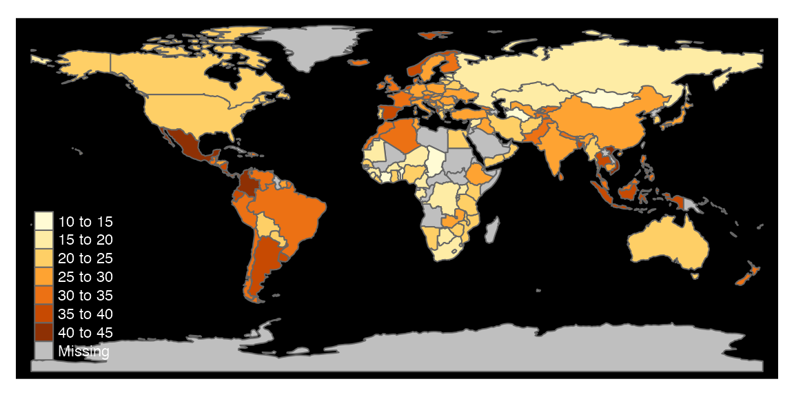
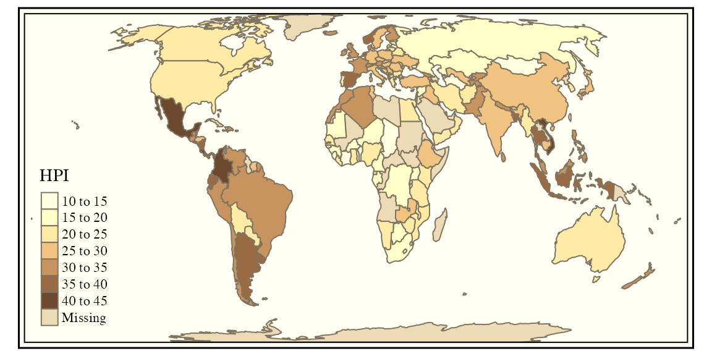
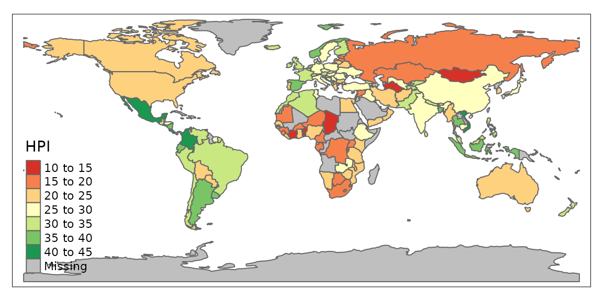

With the tmap package, thematic maps can be generated with great flexibility. The syntax for creating plots is similar to that of ggplot2, but tailored to maps. This vignette is for those who want to get started with tmap within a couple of minutes. A more detailed description of tmap can be found in an article published in the Journal of Statistical Software (JSS). However, that article describes tmap version 1.11-2, which is out-of-date. Some major changes have been made since then, which are described in vignette("tmap-changes").
For more context on R’s geographic capabilities we recommend the online version of the book Geocomputation with R. The Making maps with R chapter of the book provides many more context and abundant code examples of map making with tmap and other packages. Other good resources are the vignettes of the sf package, and the website rspatial.org .
Hello World!
A good place to start is to create a map of the world. After installing tmap, the following lines of code should create the map shown below:
library(tmap)
data("World")
tm_shape(World) +
tm_polygons("HPI")
The object World is a spatial object of class sf from the sf package; it is a data.frame with a special column that contains a geometry for each row, in this case polygons. In order to plot it in tmap, you first need to specify it with tm_shape. Layers can be added with the + operator, in this case tm_polygons. There are many layer functions in tmap, which can easily be found in the documentation by their tm_ prefix. See also ?'tmap-element'.
Interactive maps
Each map can be plotted as a static image or viewed interactively using "plot" and "view" modes, respectively. The mode can be set with the function tmap_mode, and toggling between the modes can be done with the ‘switch’ ttm() (which stands for toggle thematic map.
tmap_mode("view")
tm_shape(World) +
tm_polygons("HPI")
Multiple shapes and layers
A shape is a spatial object (with a class from sf, sp, stars, or raster). Multiple shapes and also multiple layers per shape can be plotted:
data(World, metro, rivers, land)
tmap_mode("plot")
## tmap mode set to plotting
tm_shape(land) +
tm_raster("elevation", palette = terrain.colors(10)) +
tm_shape(World) +
tm_borders("white", lwd = .5) +
tm_text("iso_a3", size = "AREA") +
tm_shape(metro) +
tm_symbols(col = "red", size = "pop2020", scale = .5) +
tm_legend(show = FALSE)
## old-style crs object detected; please recreate object with a recent sf::st_crs()
## old-style crs object detected; please recreate object with a recent sf::st_crs()
## old-style crs object detected; please recreate object with a recent sf::st_crs()
Facets
Facets can be created in three ways:
- By assigning multiple variable names to one aesthetic (in this example the first argument of
tm_polygons:
tmap_mode("view")
tm_shape(World) +
tm_polygons(c("HPI", "economy")) +
tm_facets(sync = TRUE, ncol = 2)
- By splitting the spatial data with the
byargument oftm_facets:
tmap_mode("plot")
## tmap mode set to plotting
data(NLD_muni)
NLD_muni$perc_men <- NLD_muni$pop_men / NLD_muni$population * 100
tm_shape(NLD_muni) +
tm_polygons("perc_men", palette = "RdYlBu") +
tm_facets(by = "province")
## old-style crs object detected; please recreate object with a recent sf::st_crs()
## old-style crs object detected; please recreate object with a recent sf::st_crs()
## old-style crs object detected; please recreate object with a recent sf::st_crs()
## old-style crs object detected; please recreate object with a recent sf::st_crs()
## old-style crs object detected; please recreate object with a recent sf::st_crs()
- By using the
tmap_arrangefunction:
tmap_mode("plot")
## tmap mode set to plotting
data(NLD_muni)
tm1 <- tm_shape(NLD_muni) + tm_polygons("population", convert2density = TRUE)
tm2 <- tm_shape(NLD_muni) + tm_bubbles(size = "population")
tmap_arrange(tm1, tm2)
## old-style crs object detected; please recreate object with a recent sf::st_crs()
## old-style crs object detected; please recreate object with a recent sf::st_crs()
## old-style crs object detected; please recreate object with a recent sf::st_crs()
## old-style crs object detected; please recreate object with a recent sf::st_crs()
## old-style crs object detected; please recreate object with a recent sf::st_crs()
## old-style crs object detected; please recreate object with a recent sf::st_crs()
## old-style crs object detected; please recreate object with a recent sf::st_crs()
## old-style crs object detected; please recreate object with a recent sf::st_crs()
## old-style crs object detected; please recreate object with a recent sf::st_crs()
## old-style crs object detected; please recreate object with a recent sf::st_crs()
## old-style crs object detected; please recreate object with a recent sf::st_crs()
## old-style crs object detected; please recreate object with a recent sf::st_crs()
## old-style crs object detected; please recreate object with a recent sf::st_crs()
## old-style crs object detected; please recreate object with a recent sf::st_crs()
## old-style crs object detected; please recreate object with a recent sf::st_crs()
## old-style crs object detected; please recreate object with a recent sf::st_crs()
## old-style crs object detected; please recreate object with a recent sf::st_crs()
## old-style crs object detected; please recreate object with a recent sf::st_crs()
## old-style crs object detected; please recreate object with a recent sf::st_crs()
## old-style crs object detected; please recreate object with a recent sf::st_crs()
## Legend labels were too wide. Therefore, legend.text.size has been set to 0.27. Increase legend.width (argument of tm_layout) to make the legend wider and therefore the labels larger.
## The legend is too narrow to place all symbol sizes.
Basemaps and overlay tile maps
Tiled basemaps can be added with the layer function tm_basemap. Semi-transparent overlay maps (for example annotation labels) can be added with tm_tiles.
tmap_mode("view")
tm_basemap("Stamen.Watercolor") +
tm_shape(metro) + tm_bubbles(size = "pop2020", col = "red") +
tm_tiles("Stamen.TonerLabels")
See a preview of the available tilemaps. This list is also accessible in R: leaflet::providers.
Options and styles
The functions tm_layout and tm_view are used to specify the map layout and the interactive aspects respectively. These functions can be used in the same way as the layer functions, e.g.
tmap_mode("plot")
## tmap mode set to plotting
tm_shape(World) +
tm_polygons("HPI") +
tm_layout(bg.color = "skyblue", inner.margins = c(0, .02, .02, .02))
These options, as well as a couple of others, can also be set within with tmap_options, which works in the same way as the base R function options. The main advantage is that these options are set globally, so they do not have to be specified in each map, for the duration of the session.
tmap_options(bg.color = "black", legend.text.color = "white")
tm_shape(World) +
tm_polygons("HPI", legend.title = "Happy Planet Index")
A style is a certain configuration of the tmap options.
tmap_style("classic")
## tmap style set to "classic"
## other available styles are: "white", "gray", "natural", "cobalt", "col_blind", "albatross", "beaver", "bw", "watercolor"
tm_shape(World) +
tm_polygons("HPI", legend.title = "Happy Planet Index")
# see what options have been changed
tmap_options_diff()
## current tmap options (style "classic") that are different from default tmap options (style "white"):
## $sepia.intensity
## [1] 0.7
##
## $frame.double.line
## [1] TRUE
##
## $fontfamily
## [1] "serif"
##
## $compass.type
## [1] "rose"
##
## $basemaps
## [1] "Esri.WorldTopoMap"
##
## $basemaps.alpha
## [1] 0.5
# reset the options to the default values
tmap_options_reset()
## tmap options successfully resetNew styles can be created; see ?tmap_options.
Exporting maps
tm <- tm_shape(World) +
tm_polygons("HPI", legend.title = "Happy Planet Index")
## save an image ("plot" mode)
tmap_save(tm, filename = "world_map.png")
## save as stand-alone HTML file ("view" mode)
tmap_save(tm, filename = "world_map.html")Shiny integration
It is possible to use tmap in shiny:
# in UI part:
tmapOutput("my_tmap")
# in server part
output$my_tmap = renderTmap({
tm_shape(World) + tm_polygons("HPI", legend.title = "Happy Planet Index")
})See ?renderTmap for a working example.
Quick thematic map
Maps can also be made with one function call. This function is qtm:
qtm(World, fill = "HPI", fill.pallete = "RdYlGn")